전자캐드기능사 (2007-09-16 기출문제)
1과목: 전기전자공학(대략구분)
1. 정현파 교류전압의 실효값이 243V일 때 최대값은 약 몇 V인가?
- 257
- 270
- 344
- 382
(정답률: 59%)

2. 진성 반도체의 가전자 수는 몇 개인가?
- 1개
- 2개
- 3개
- 4개
(정답률: 58%)
3. 다음 연산 증폭기에서 출력전압(Vo)전압과 입력전압(V)의 위상 관계는?
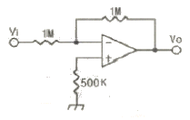
- 동위상
- 역위상(180˚)
- 90˚ 차
- 45˚ 차
(정답률: 45%)
4. 두 저항을 직렬로 연결했을 때 합성 저항은 15[Ω], 병렬로 연결했을 때의 합성 저항은 3.6[Ω]이다. 각 저항의 값은 얼마인가?
- 3.6[Ω]과 11.4[Ω]
- 6[Ω]과 9[Ω]
- 3[Ω]과 12[Ω]
- 4[Ω]과 11[Ω]
(정답률: 73%)
5. 증폭도가 100인 증폭회로에 궤환을 β가 0.01의 부궤환을 걸면 증폭도 A1는?
- 10
- 30
- 50
- 100
(정답률: 29%)
6. N형 반도체에서 전류를 흐르게 하는 다수 반송자는?
- 원자
- 정공
- 전자
- 불순물
(정답률: 75%)
7. 히스테리시스 곡선에서 횡축을 자르는 값을 무엇이라고 하는가?
- 자화력
- 자속밀도
- 보자력
- 투자율
(정답률: 50%)
8. 그림과 같이 4개의 저항을 접속하였을 때 전체 전류가 10A라 하면 b, d 간의 전위차는 몇 V인가?
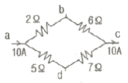
- 2
- 4
- 6
- 8
(정답률: 25%)
9. 다음 중 클리퍼(clipper)에 대한 설명으로 가장 적합한 것은?
- 임펄스를 증폭하는 회로이다.
- 톱니파를 증폭하는 회로이다.
- 구형파를 증폭하는 회로이다.
- 파형의 상부 또는 하부를 일정한 레벨로 잘라내는 회로이다.
(정답률: 56%)
10. DSB 통신과 비교하여 SSB 통신 방식에 대한 설명으로 적합하지 않은 것은?
- 송신 전력이 절감된다.
- 송수신기 장치가 단순해진다.
- 주파수 이용 효율이 높다.
- 신호대 잡음비(S/N)가 개선된다.
(정답률: 43%)
11. 다음 CP-Amp의 출력전압 Vout으로 가장 적합한 것은?
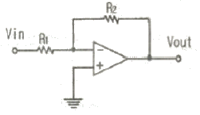
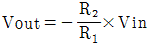
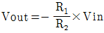
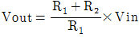
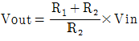
(정답률: 32%)
12. 연산 증폭기에서 차동 이득(Ad)이 1000, 동상 이득(Ac)이 10일 때 동상 신호 제거비(CMMR)는 몇 데시벨인가?
- 10
- 20
- 40
- 100
(정답률: 30%)
13. AM 변조에서 변조도가 1인 때를 무엇이라고 하는가?
- 무변조
- 과변조
- 100% 변조
- 약변조
(정답률: 52%)
14. 전압 증폭율이 10배일 때 이를 dB(데시벨)로 나타내면?
- 10
- 20
- 30
- 40
(정답률: 44%)
15. 100V, 100W의 전구를 80V에 사용하였을 때 소비되는 전력은 몇 W인가?
- 40
- 64
- 80
- 100
(정답률: 39%)
2과목: 전자계산기일반(대략구분)
16. 마이크로컴퓨터의 직렬 입ㆍ출력 인터페이스가 아닌 것은?
- USARI
- PPI
- SIO
- ACIA
(정답률: 40%)
17. 컴퓨터로 처리하고자 하는 문제를 분석하고 그 처리 순서를 단계화하여, 상호 간의 관계를 알기 쉽게 약속된 기호와 도형을 사용해서 나타내는 것은?
- 문제 분석
- 입ㆍ출력 설계
- 프로그래밍 작성
- 순서도 작성
(정답률: 76%)
18. 다음 중 스택(stack)을 필요로 하는 명령 형식은?
- 0-주소
- 1-주소
- 2-주소
- 3-주소
(정답률: 66%)
19. 2진수의 덧셈 규칙에서 옳지 않은 것은?
- 0+0=0
- 0+1=1
- 1+0=1
- 1+1=2
(정답률: 86%)
20. 외관상 CD-ROM과 동일하지만 동영상 비디오 정보 등의 대용량을 저장하기 위해 개발되었으며, CD-ROM에 비해 약 7배의 저장 용량이 가능하고 약 4.9GB 정도 용량이 기본인 정보 기억 매체는?
- VOD
- V-CD
- CD-RW
- DVD-ROM
(정답률: 52%)
21. 다음 그림과 같은 형식은 어떤 주소 지정 형식인가?
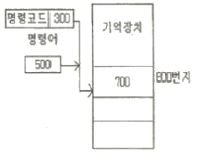
- 직접데이터 형식
- 상대주소 형식
- 간접주소 형식
- 직접주소 형식
(정답률: 52%)
22. 10진수 20(10)를 2진수로 변환하면?
- 11110(2)
- 10101(2)
- 10100(2)
- 00001(2)
(정답률: 74%)
23. 중앙처리장치에서 마이크로 오퍼레이션이 순서적으로 일어나게 하려면 무엇이 필요한가?
- 누산기
- 제어신호
- 스위치
- 레지스터
(정답률: 63%)
24. 일정 시간이 흐르면 전하가 방전되어 내용이 지워지므로 지속적인 재충전(refresh)이 필요하고 주로 컴퓨터의 주기억 장치로 사용되는 것은?
- PROM
- EPROM
- SRAM
- DRAM
(정답률: 64%)
25. 다음은 마이크로프로세서의 입출력에서 사용되는 비동기 신호의 그림이다. ( )안의 신호는?
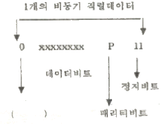
- 동기 비트
- 시작 비트
- 출력 비트
- 핸드세이킹 비트
(정답률: 41%)
26. 에러 발생률이 작아서 A/D변환 및 입ㆍ출력장치에 사용되는 코드는?
- 3초과 코드
- 해밍 코드
- 그레이 코드
- 8421 코드
(정답률: 56%)
27. 네트워크상에서 쓸 수 있도록 미국 선마이크로시스템사에서 개발한 객체지향 프로그래밍 언어는?
- 베이직(BASIC)
- 코볼(COBOL)
- C 언어
- 자바(JAVA)
(정답률: 65%)
28. 다음 부품 심벌의 이름은?
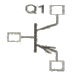
- NPN 트랜지스터
- NMOS FET
- PNP 트랜지스터
- Triac
(정답률: 74%)
29. 단ㆍ양면층 인쇄회로기판과 비교하여 다층 인쇄회로기판(MLB)의 특징으로 옳지 않은 것은?
- 프린트 기판의 제조 공정이 복잡하다.
- 프린트 기판의 패턴 검사가 육안으로 용이하다.
- 그라운드 플랜(ground plane)을 용이하게 구성할 수 있다.
- 프린트 기판의 저 노이즈화 또는 고속 전자회로를 설계하는데 적합하다.
(정답률: 46%)
30. 다음 전기, 전자용 부품의 기호 중 퓨즈에 해당하는 것은?
(정답률: 86%)
3과목: 전자제도(CAD) 이론(대략구분)
31. 다음 PCB 중 내부에 2개의 Layer를 Ground 및 Power 전용으로 사용하는 4-Layer PCB의 일반적인 효과로 볼 수 없는 것은?
- 잡음에 강한 PCB 설계가 가능하다.
- 접지(Earth) 선의 차폐 효과가 있다.
- 단ㆍ양면에 비해 제작비용을 절감할 수 있다.
- 전원선의 임피던스를 낮출 수 있다.
(정답률: 47%)
32. 전자기기의 패널을 설계 제도할 때 유의해야 할 사항으로 옳은 것은?
- 전원 코드는 배면에 배치한다.
- 패널 부품은 크기를 고려하지 않고 배치한다.
- 조작 빈도가 낮은 부품은 패널의 중앙이나 오른쪽에 배치한다.
- 장치의 외부와 연결되는 접속기가 있을 경우 가능한 패널의 위에 배치한다.
(정답률: 49%)
33. 내용에 따른 도면의 분류에서 제품의 전체적인 순서와 상태를 나타내는 도면으로서, 특히 복잡한 구조를 알기 쉽게 하고, 각 단위 또는 부품의 관련이 나타나도록 그린 도면은?
- 상세도(detail drawing)
- 공정도(process drawing)
- 조립도(assembly drawing)
- 부분조립도(partial assembly drawing)
(정답률: 35%)
34. 다음 중 부품의 극성을 고려하지 않아도 되는 것은?
- 전해 콘덴서
- 발광다이오드
- 트랜지스터
- 저항
(정답률: 76%)
35. CAD작업에 의하여 만들어진 부품간의 결선정보, 부품번호, 핀 번호 등의 데이터를 말하며, 이 데이터를 기초로 배선 패턴의 설계(Artwork)가 이루어지는 것은?
- Silk 데이터
- CAM 데이터
- 네트리스트(Netlist)
- 거버 데이터(Gerber Data)
(정답률: 75%)
36. 인쇄회로기판의 설계시 고려사항과 거리가 먼 것은?
- 전자 부품의 치수와 단자 피치(pitch)
- 인쇄회로기판의 재질 및 층수
- 부품의 실장 방법
- 수량 및 납기
(정답률: 61%)
37. 부품이 PCB에 삽입될 때에 부품의 리드가 삽입되는 Hole 주위에 입혀지는 엷은 구리 판막의 올바른 명칭은?
- PAD
- TRACK
- VIA
- POLYGON(COPPER)
(정답률: 64%)
38. 다음 중 입ㆍ출력장치를 겸용하여 사용할 수 있는 것은?
- 마우스
- 프린터
- 트랙볼
- 터치 스크린모니터
(정답률: 77%)
39. 다음 기호의 명칭으로 옳은 것은?
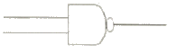
- OR-GATE
- NAND-GATE
- AND-GATE
- NOR-GATE
(정답률: 86%)
40. 다음 중 제너 다이오드(ZENER DIODE)의 기호는?
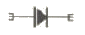
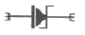
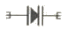
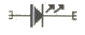
(정답률: 88%)
41. 인쇄회로기판에 배치될 부품의 위치와 형태 등에 대한 부품 배치도의 설명으로 옳지 않은 것은?
- 부품은 균형있게 배치한다.
- 부품 상호간에 신호가 유도되지 않도록 한다.
- 인쇄회로기판의 점퍼선은 부품으로 간주하지 않으며 표시하지 않는다.
- 부품의 종류, 기호, 용량, 외형도, 핀의 위치, 극성 등을 표시하여야 한다.
(정답률: 81%)
42. 다음 중 국제적으로 통일된 규격의 제정과 실천의 촉진을 위해 설립된 기구는?
- ISO
- SNV
- BS
- ANSI
(정답률: 86%)
43. 다음 중 CAD 시스템의 특징이 아닌 것은?
- CAD는 전자분야에만 쓸 수 있는 설계시스템이다.
- 다품종 소량생산에도 유연하게 대처할 수 있다.
- 도면의 수정과 편집이 쉽고 출력이 용이하다.
- 도면의 이동과 복사, 확대와 축소가 쉽다.
(정답률: 68%)
44. 다음 중 전자캐드의 특징으로 거리가 먼 것은?
- 회로의 설계에 적합하다.
- 기구의 설계에 적합하다.
- 회로의 동작 검증이 용이하다.
- 인쇄회로기판의 설계에 적합하다.
(정답률: 75%)
45. 사진이나 그림, 문서, 도표 등을 컴퓨터에 디지털화하여 입력하는 장치는?
- 터치스크린
- 스캐너
- 마우스
- 라이트 펜
(정답률: 77%)
46. 다음 중 전자캐드로 작성된 도면의 요소를 지우는 기능은?
- ZOOM
- SAVE
- DELETE
- EDIT
(정답률: 87%)
47. 제도 용지에 직접 연필로 작성한 도면이나 컴퓨터로 작성한 최초의 도면으로 트레이스도의 원본이 되는 도면의 호칭은?
- 윈도
- 트레이스도
- 스케치도
- 착색도
(정답률: 67%)
48. 어느 제도의 척도가 1:1로 표기되었을 경우 다음 중 무엇을 의미하는가?
- 축척
- 현척
- 배척
- NS
(정답률: 80%)
49. 저항값이 낮은 저항기로서 대전력용 및 표준저항기 등과 같이 고정밀도 저항기로 사용되는 저항기는?
- 탄소피막 저항기
- 솔리드 저항기
- 모듈 저항기
- 권선 저항기
(정답률: 67%)
50. PCB 제조공정은 어떤 방법에 의해 소정의 배선만 남기고, 다른 부분의 패턴을 제거할 것인가 하는 점이 중요하다. 다음 중 대표적으로 사용되는 에칭(패턴제거방법) 방법이 아닌 것은?
- 사진 부식법
- 실크 스크린법
- 플렉시블 인쇄법
- 오프셋 인쇄법
(정답률: 54%)
51. 반도체 소자 중 전압의 크기에 따라 저항 값이 변하는 소자는?
- 배리스터
- 서미스터
- 트랜지스터
- 다이오드
(정답률: 57%)
52. KS의 부문별 기호에서 전기ㆍ전자ㆍ통신에 관계되는 분류기호는?
- KS A
- KS B
- KS C
- KS D
(정답률: 84%)
53. 다음 중 전자 CAD에서 DRC(design rule check)로 할 수 없는 기능은?
- 부품 용량의 정확성
- 각 요소간의 최소 간격
- 금지영역 조사
- 올바르지 못한 배선
(정답률: 54%)
54. 회로도 작성시 고려해야 할 사항으로 옳지 않은 것은?
- 신호의 흐름은 도면의 오른쪽에서 왼쪽으로, 아래서 위로 그린다.
- 주회로와 보조회로가 있는 경우에는 주회로를 중심에 그린다.
- 대칭으로 동작하는 회로는 접지를 기준으로 하여 대칭되게 그린다.
- 선의 교차가 적고 부품이 도면 전체에 고루 분포되게 그린다.
(정답률: 82%)
55. CAD 활용시의 특징이 아닌 것은?
- 수 작업에 의존하던 디자인의 자동화가 이루어진다.
- 정확하고 효율적인 작업으로 개발 기반이 단축된다.
- 신제품 개발에 적극적으로 대처할 수 있다.
- 보다 많은 인력과 시간이 소요된다.
(정답률: 85%)
56. 부품이나 단자의 납땜 장소로 사용되거나, 절연판을 관통구(through hole)에 도금 등의 방법으로 도체를 삽입하는 장소로 허용하는 도체 부분은?
- 패턴(pattern)
- 랜드(Land)
- 보드(board)
- 마운트(mount)
(정답률: 67%)
57. PCB를 제작하기 위한 파일로서 PCB 설계의 모든 정보가 들어있는 파일을 일반적으로 무엇이라 하는가?
- Gerber 파일
- Print 파일
- BOM DATA 파일
- Report 파일
(정답률: 77%)
58. 다음 부품배치 방법 중 옳지 않은 것은?
- 버스 라인의 흐름에 주의하여 IC를 배치한다.
- 배선이 많은 부품들은 기판의 외곽으로 배치한다.
- 커넥터 주변은 배선을 위한 충분한 공간을 확보한다.
- 극성있는 부품은 삽입오류를 방지하기 위해 취급방향을 통일한다.
(정답률: 69%)
59. 능동소자 중 pnpn 4층 구조로 3개의 pn접합이 애노드(A) 캐소드(K) 게이트(G)등 3개의 전극으로 구성되어 있으며, 조광장치나 전동차의 전력조절 등에 사용되는 소자는?
- 다이오드
- 트랜지스터
- SCR
- FET
(정답률: 54%)
60. 산업 규모가 커지고, 제품의 대량 생산화와 더불어 원활한 산업 활동과 국가간의 교류 및 공동의 이익을 얻기 위하여 표준 규격을 제정하고 있다. 이와 같이 표준 규격을 제정함으로써 나타나는 특징으로 볼 수 없는 것은?
- 제품의 균일화가 이루어진다.
- 생산의 능률화가 이루어진다.
- 제품의 세계화가 어려워진다.
- 제품 상호 간의 호환성이 좋아진다.
(정답률: 86%)